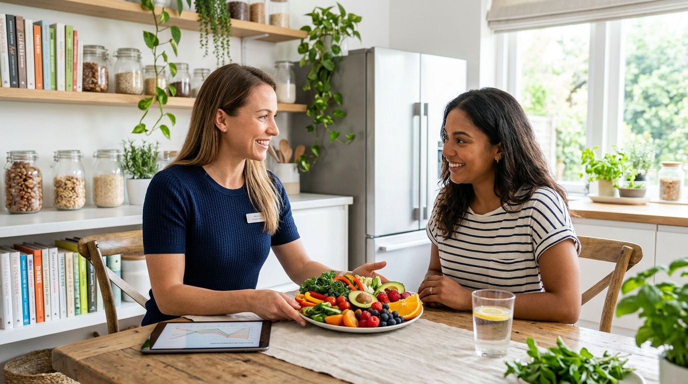

Consulta individual
Pregunta por el costo
- Valoración de tu historial y objetivos
- Plan de alimentación personalizado
- Recomendaciones para empezar

Soy Neyra Espinoza, nutrióloga. Te acompaño con un plan hecho a tu medida, a tu rutina y a la comida que sí disfrutas, sin dietas de moda ni promesas exageradas.
Cada consulta parte de ti: tu historial, tus horarios, tus gustos y tu meta. Elige el servicio que mejor se acomode a lo que necesitas.
Conocemos tu historial, hábitos y objetivos para definir por dónde empezar.
Revisamos tu avance y ajustamos el plan para que siga funcionando.
Un plan de alimentación claro, práctico y adaptado a tu día a día.
Cambios graduales y sostenibles, sin dietas extremas.
Alimentación para entrenar, rendir y recuperarte mejor.
Orientación para llevar una alimentación equilibrada junto con tu médico.
Hábitos saludables desde pequeños, con apoyo para toda la familia.
Alimentación adecuada para ti y para tu bebé en cada etapa.
Atención por videollamada, desde donde estés.
Aprendes a leer etiquetas, armar tus comidas y decidir con seguridad.
Comer bien no debería sentirse como un castigo.
Soy Neyra Espinoza, nutrióloga. Mi trabajo es ayudarte a entender qué necesita tu cuerpo y a convertirlo en un plan que sí puedas seguir, con tu presupuesto, tu familia y tu horario.
Creo en la constancia más que en la perfección: pequeños cambios que se mantienen valen más que una dieta estricta que dura dos semanas.
Un proceso sencillo, de la primera conversación al progreso que puedes ver y sentir.
Escribes por WhatsApp y agendamos tu cita. En consulta hablamos de tu historial y hábitos.
Decidimos juntas qué quieres lograr y en qué tiempo es realista.
Te entrego un plan claro, adaptado a tu rutina y a tus gustos.
Revisamos cómo te va, resolvemos dudas y ajustamos lo necesario.
Consolidas hábitos que puedes mantener a largo plazo.
Elige la modalidad que mejor se acomode a ti. Escríbeme por WhatsApp y te comparto los costos y la disponibilidad.
Pregunta por el costo
Pregunta por el costo
Pregunta por el costo
Ideas sencillas que puedes aplicar mientras agendas tu consulta.
No hace falta cambiarlo todo. Elige un hábito, como tomar más agua o sumar verdura a la comida, y hazlo constante.
La cantidad ideal depende de tu edad, actividad y salud, por eso se calcula en consulta y no con una cifra general.
Tener ingredientes base listos te ayuda a comer mejor aun en días de mucha prisa.
Puedes elegir. Al agendar por WhatsApp te confirmo la modalidad y los horarios disponibles.
Te confirmo la duración al agendar tu cita, según el tipo de consulta que necesites.
Si tienes estudios recientes, es útil que los compartas. Si no los tienes, también podemos empezar y te digo si hace falta alguno.
Sí. Recibes un plan personalizado, pensado para tus objetivos, tu rutina y tus gustos.
Escríbeme por WhatsApp y te comparto los costos de cada consulta y paquete.
Avísame por WhatsApp con anticipación y buscamos juntas un nuevo horario.
Llena estos datos y se abrirá WhatsApp con tu mensaje listo para enviar. Yo te confirmo el horario.
Disponible por videollamada. Agenda por WhatsApp y te envío el enlace.
Agendar mi cita